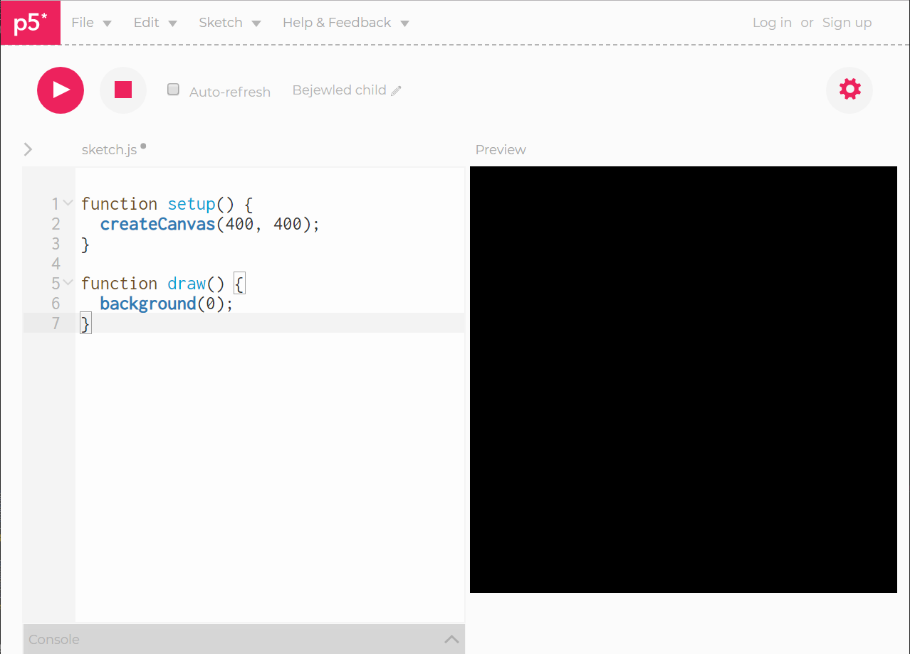
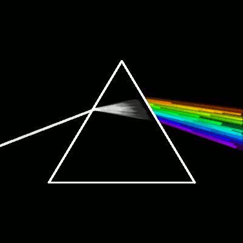

p5* js
This presentation is about p5.js. What is p5.js? Who should or might you be to learn about it? What might you use it for? Let me give you a little context first.
Processing
A flexible software sketchbook and a language for learning how to code within the context of visual arts
There is a thing called Processing that is a flexible software sketchbook and a language for learning how to code within the context of visual arts. Processing is
a project started in 2001 by Casey Reas and Benjamin Fry, two students at the MIT media lab trying to make a tool that could help them do their work.
Interestingly enough, Processing, when it was first created back in 2001, was built on top of the language called Java, which can be easily explained. Why? Yes, because of
Java Applets, which at the time were used to display dynamic content on a Web-page. However, if you fast-forward 18 years later, to 2019...
Where have you last seen a Java Applet on the Web? The language used in the browser these days is something called JavaScript.
So the question arose - what language would you pick if Processing was invented today?
Creator of p5* js
Lauren McCarthy
And the person who answered this question was Lauren McCarthy, an LA-based artist, who started a new project called p5,js, in collaboration with the Processing Foundation. It
eventually ended up in creating the p5 library, which one might use to create sketches, art, data visualization etc. You might even make websites like a web-designer... There's a lot of different paths
you can choose and take. So, here are the ways how we can use it.
https://editor.p5js.org/
There's a tool called p5.js web editor. Using it you can try to create something right on the web-page.

Clean and pretty simple interface. I would just recommend to check the “Auto-refresh” checkbox to enable auto-refreshing as you type your code and, maybe, choose
the dark theme in the settings.
let sketch = function (p5) {
p5.setup = function () {
let c1 = p5.createCanvas(200, 200);
c1.parent('firstCanvas');
p5.createP("<h1>This is some text<h1>");
}
p5.draw = function () {
p5.background(220, 50, 45);
p5.rect(20,40,10, 50);
}
};
new p5(sketch, window.document.getElementById('container'));
To avoid jumbling the p5 code up with other code, and the p5 functions with functions from other libraries you might use, there's a way to “isolate” p5
using its instance mode. We can also restrict its scope to a particular container
function setup() {
createCanvas(400, 400);
}
function draw() {
background(220, 50, 45);
ellipse(50, 50, 30, 80);
}
However, in further examples I will be using so-called global mode. So let's take a look at the basic syntax.
In order to draw with p5, we need a canvas. And some sort of a coordinate system to work inside it.
Coordinate system
In the geometry class, we use the Cartesian coordinate system.
The Cartesian system has the X-axis going from left to right, and the Y-axis going from bottom to top. Zero-zero is right in the middle, and all numbers below it are
negative ones on the Y-axis, and all numbers to the left of zero-zero are negative on the X-axis. In the canvas, the coordinate system is different.
Here, the zero-zero point is the top left. And the X-number is getting bigger as you go to the right, and the Y-number gets bigger as you go down.
createCanvas()
function setup() {
createCanvas(400, 400);
background(205, 0, 0);
line(0, 0, width, height);
}
First, we need a setup. In this particular example we're creating a square canvas, 400 pixels wide and tall, giving it some nice
grey background using a shorthand notation of 205, 0, 0, and adding a line with its starting point at x-zero, y-zero, and the second point at x-width, y-height.
draw()
let yPos = 0;
function setup() {
createCanvas(150, 150);
frameRate(30);
}
function draw() {
background(205);
yPos = yPos - 1;
if (yPos < 0) {
yPos = height;
}
line(0, yPos, width, yPos);
}
While the setup function runs only once, there's another function, draw(), which draws and redraws the canvas elements, being a replacement for
the RequestAnimationFrame, render and update functions usually used in normal JavaScripts. A brief overview - here, we're creating a square
canvas with the side of 150 pixels. Then, we are setting the frame rate. And then, within the block of the draw() function, we're writing the logic of
the line's movement.
These are very basic sketches, though, nothing to be proud of. So on the next slides you can see some really beautiful sketches created by Étienne Jacob

* All sketches by Étienne Jacob
p5 Addons
Of course, being an actively developing project, over time, the p5 library has got additional features and functionality, and has been extended using many addons.
To name just a few.
p5.dom
Lets you interact with HTML5 objects beyond the canvas, including video, audio, webcam, input, and text.
p5.sound
Extends p5 with Web Audio functionality including audio input, playback, analysis and synthesis.
p5.accessibility
Makes the p5 canvas more accessible to people who are blind and visually impaired.
p5.experience
Extensive library for p5.js that adds additional event-listening functionality for creating canvas-based web applications.
Official documentation
Articles
YouTube videos